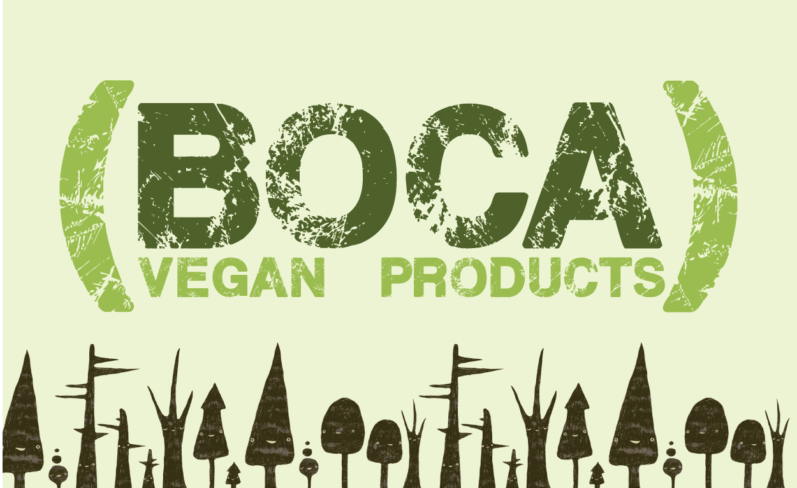

BOCA LIFESTYLE LANDING PAGE
Boca is a brand of vegetarian products that has to compete with other brands such as Morning Star. In order to differentiate themselves from their competition a more "active lifestyle" approach was created. While caring about animals vegetarians are also inclined to live an active lifestyle. Taking advantage of this a Boca lifestyle landing page was created to show Boca Brands as the meeting point between animal lovers and nature lovers.